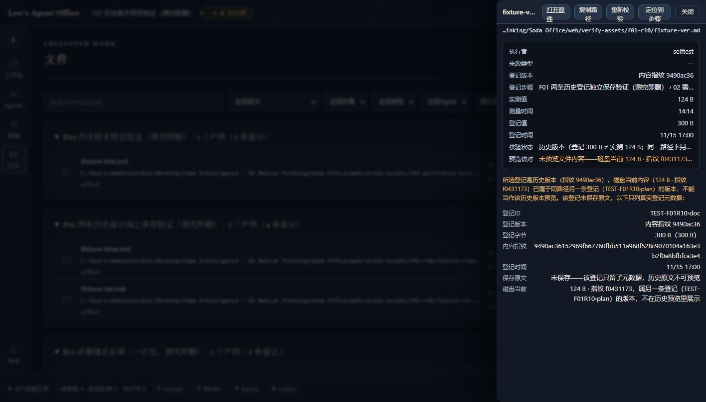
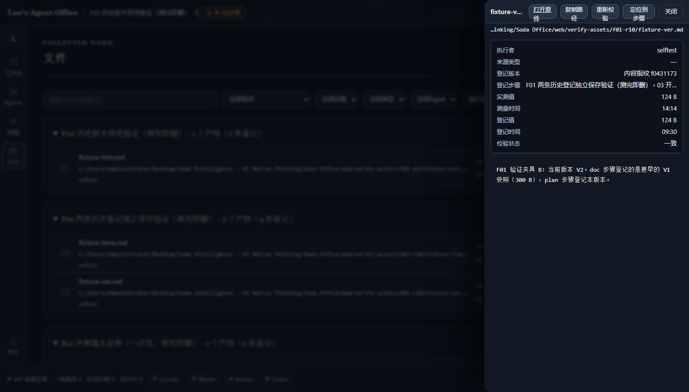
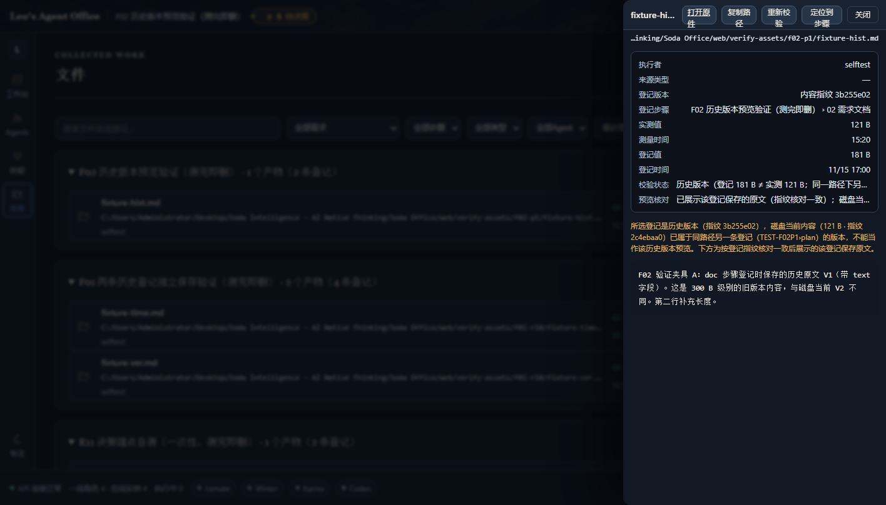

F02 第 1 轮验证报告
历史版本预览不冒充磁盘当前内容
2026-11-16 · server.js http://127.0.0.1:8090（build r11c）· Edge headless Edg/157.0.4341.60（CDP 9466，验证后已关闭）· Node 20.19.2 --experimental-websocket
结论：38/38 断言通过 + 回归 3/3 通过。历史登记（300 B / 9490ac36…）预览不再展示 124 B 当前文件，只给真实登记元数据并明示原文不可预览；带保存原文的登记（181 B / 3b255e02…）指纹核对一致后展示保存原文。
一、改了什么（只动 F02 这一处）
| 文件 | 改动 |
|---|
web/server.js | /api/office/file 文本响应新增 sha256（全文哈希，不受 2MB 截断影响），供前端核对预览内容归属 |
web/app.js | 新增 fvVersionGate / diskMatchesOtherReg / sha256Text / textBytesOf / fvHistPreview；openFileView 文本分支加版本门禁；renderFvDetail 加可选 pv 参数（仅历史分支多一行「预览核对」） |
web/app.css | 末尾追加 F02 层：#fv-body .fv-hint（12px / 18px / #E5B95E、与内容间距 12px）+ .fv-hist-meta .fh-kv 元数据行；.fv-panel 宽度零改动 |
门禁逻辑（与 server.js artifactVersionGateOf 同口径：指纹优先、字节退判）
1
点登记行 → 按登记ID + 版本指纹（data-reg-vkey）定位那条登记
2
磁盘内容指纹与所选登记一致 → 原有预览（内容 + 实测指纹一致）
3
磁盘内容恰属
同路径另一条登记的版本（F02 场景：124 B 属 plan 步骤登记）→ 历史分支：
登记自带保存原文（f.text）且指纹核对一致 → data-fv-hint="hist-saved"，展示该保存原文
未保存原文 → data-fv-hint="hist"，只列真实登记元数据（登记ID / 登记版本 / 登记字节 / 内容指纹 / 登记时间 / 保存原文状态 / 磁盘当前归属），明示「原始内容不可预览」，不展示磁盘当前内容
4
登记与磁盘不同、但磁盘不属任何其他登记版本（普通漂移文件）→ 保持原行为（展示磁盘内容 + 原有校验状态），零回归
二、验证了什么（全部 CDP 实测，非推断）
A. API 地面真值（curl 实测）5/5
- 登记：doc 300 B / 9490ac36…（历史）· plan 124 B / f0431173…（当前）· TEST-F02P1 doc 181 B / 3b255e02…（带 text 保存原文）
- 磁盘：fixture-ver.md = 124 B / f0431173… · fixture-hist.md = 121 B / 2c4ebaa0…（API 已回 sha256）
B. 点 300 B 历史登记（getComputedStyle / getBoundingClientRect 实测）10/10
#fv-body[data-fv-hint="hist"]；无 <pre>；正文无「验证夹具 B：当前版本 V2」冒充内容.fv-hint：fontSize=12px · lineHeight=18px · color=rgb(229, 185, 94)（#E5B95E）- 提示底边 → 元数据顶边 = 12.0px
- 元数据含「300 B（300 B）」、明示「不可预览」；详情「预览核对」行为 warn 色
C. 点 124 B 当前登记 6/6
- 正常
<pre> 预览；页面内 WebCrypto 实测：内容 124 B、sha256 = f0431173… 与所选登记一致
.fv-panel 宽度：当前分支 420px = 历史分支 420px（未动）；match 分支详情不添「预览核对」行
D. 点 181 B 带保存原文登记（一次性夹具 TEST-F02P1，测完已删）6/6
data-fv-hint="hist-saved"；展示 V1 保存原文，实测 181 B / sha256 3b255e02… 指纹核对一致；非磁盘 V2- 提示同规格 12px / 18px / rgb(229,185,94)；提示底边 → 原文顶边 = 12.0px
E. 刷新 ×5 + 300B/124B 交替切换 ×10 10/10
- 每次状态与所点登记一一对应：hist 态无 pre 无冒充；cur 态内容指纹 = f0431173… 且 124 B。无串用
- 全程无页面 JS 异常（console.error / exceptionThrown 为 0）
回归（app.css / server.js）3/3
- 单一漂移文件（登记≠磁盘、无其他版本归属）：仍展示磁盘内容（preLen=97536），详情不添行
- 未登记文件（server.js）：正常预览（preLen=58986），gate=noreg 不拦截
三、截图证据

300 B 历史登记：hist 态，只列登记元数据，明示不可预览

124 B 当前登记：正常预览，指纹与登记一致

181 B 带保存原文登记：hist-saved 态，展示核对一致的 V1 原文
证据与备份文件清单
f02p1-verify.out（38 断言完整输出）· f02p1-verify.mjs（验证脚本）- 改动前备份：
web/app.js.bak-f02p1 · web/app.css.bak-f02p1 · web/server.js.bak-f02p1
四、还差什么
图片类预览（loadImagePreview）没有版本门禁——同路径图片被当前版本覆盖时，点历史登记仍显示当前图片。本任务范围为文本预览区（图4 fixture-ver.md），未动图片分支；如需同等口径另开任务。